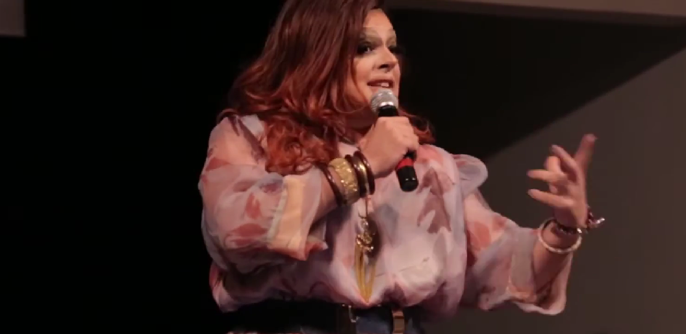

Drag queen
Consultório Sentimental
desde 2021
Série de entrevistas no YouTube, nascida das lives da pandemia — quando eu respondia perguntas do público na condição de “especialista em nada” e passei a convidar especialistas de verdade. Em 2022, com a Lei Aldir Blanc, ganhou a temporada especial Divã das Divas, entrevistando personagens icônicas da cena artística LGBTQIA+.
Mestre de cerimônias e palestrante
Bienal Sesc de Dança (2017) · #ContémDança · FLIMO — Festival Literário de Morretes · O Debatão, na Combo Drag Week · Pecha Kucha Night (2015) · TEDxRebouças (2019) · mesas e palestras na UFPR, Uninter, Universidade Positivo e PUC-PR.
Contatos Dalva

Dalvinha quer entravecar o mundo. Pecha Kucha Night Curitiba, 2015, Capela Sta Maria.
27